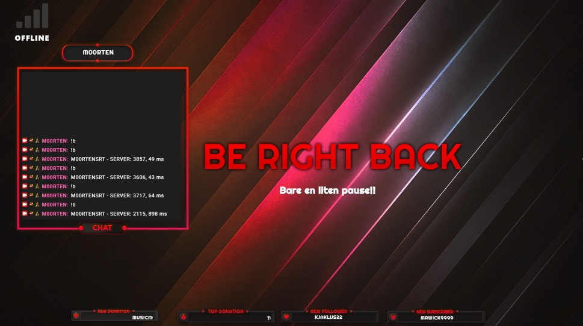

Live Eksempler fra Overlay
Status: Pålogget (LTE B3)

Her ser du hvordan søylene lyser opp grønt når du har god kontakt med masta.
Status: Frakoblet (Offline)

Hvis nettet faller ut, vil overlayet automatisk skifte til grått og vise "OFFLINE".
Hva betyr båndene?
| Bånd | Type | Beskrivelse |
|---|---|---|
| B1 / B3 | BY-NETТ | Høy fart. Perfekt for streaming i byer. |
| B20 | DEKNING | Når langt ut på landet, men har lavere kapasitet. |
| B28 | 5G READY | Den nye standarden for ekstrem rekkevidde. |
Oppsett
- Koble modemet til din Raspberry Pi.
- Kjør Python-scriptet for å hente ut signaldata.
- Bruk Tailscale for tunnel mellom Pi og PC.
- Legg til Browser Source i OBS.
Link til OBS
http://[DIN_PI_IP]:8080
* Bytt ut [DIN_PI_IP] med din Tailscale-IP.